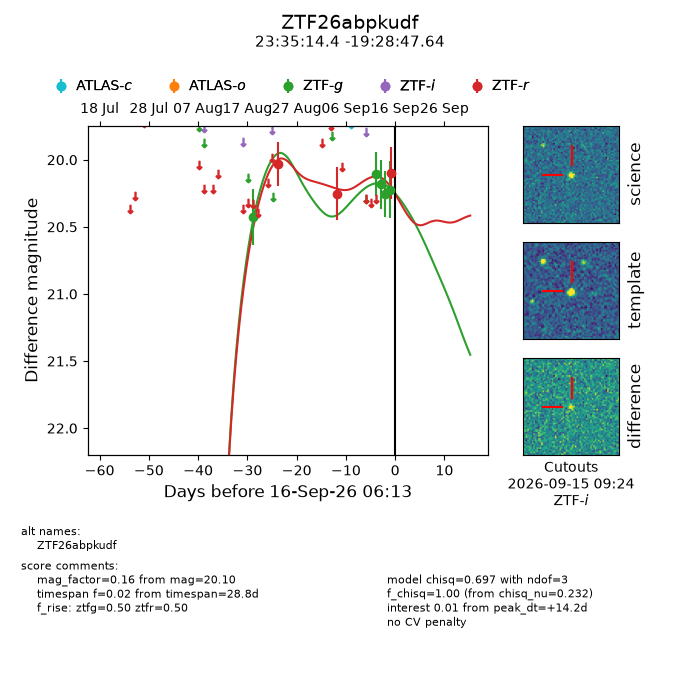
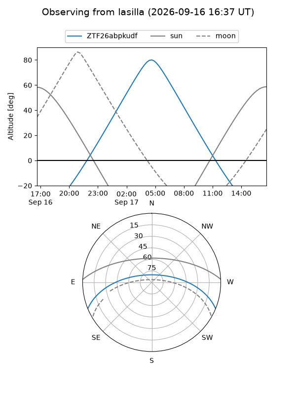
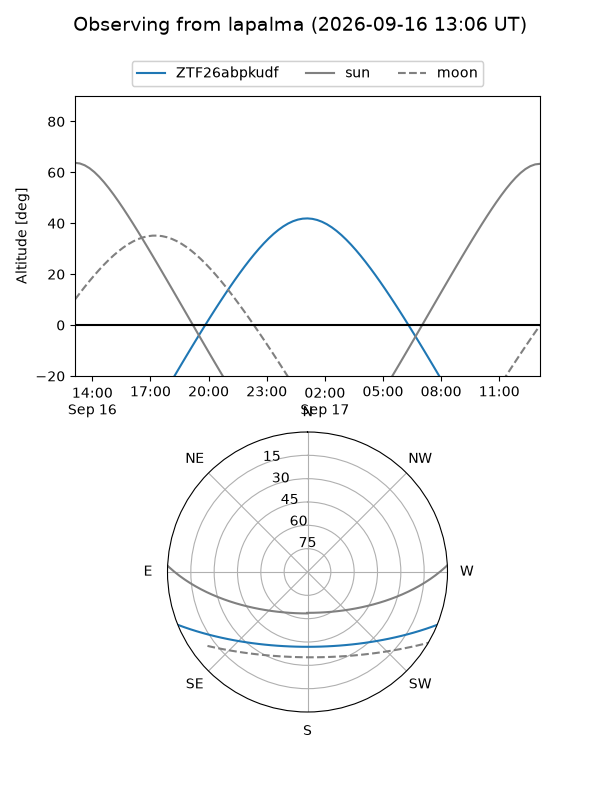
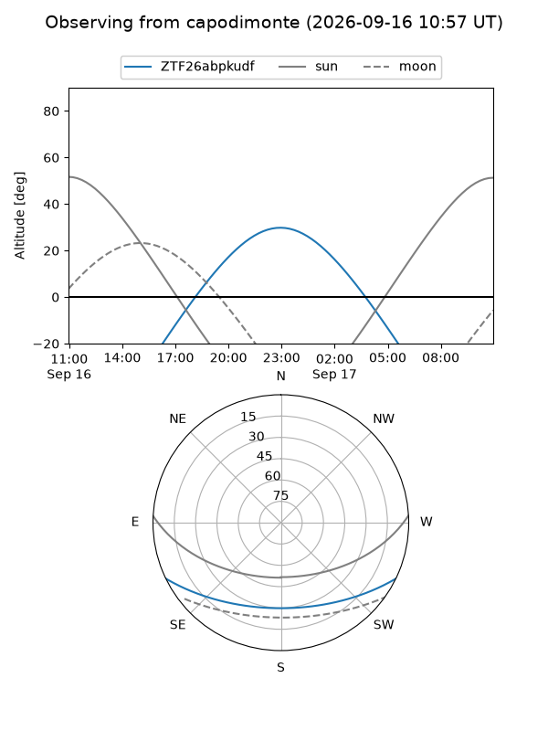
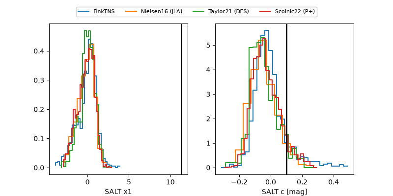

ZTF26abpkudf
Target ZTF26abpkudf at 2026-09-16 18:15
Aliases and brokers:
FINK-ZTF: ztf.fink-portal.org/ZTF26abpkudf
Lasair-ZTF: lasair-ztf.lsst.ac.uk/objects/ZTF26abpkudf
ALeRCE-ZTF: alerce.online/object/ZTF26abpkudf
Direct TNS query: direct search
alt names
ZTF26abpkudf (ztf,fink_ztf)
Coordinates:
equatorial (ra, dec) = 353.8101,-19.47990
equatorial (HMS+DMS) = 23:35:14.41,-19:28:47.64
galactic (l, b) = (52.5293,-70.93618)
Flags:
peak dt: +14.7
Photometry:
last ztfg=20.22, ztfr=20.10
5 ztfg, 3 ztfr detections
Lightcurve

Visibility



Additional plots
